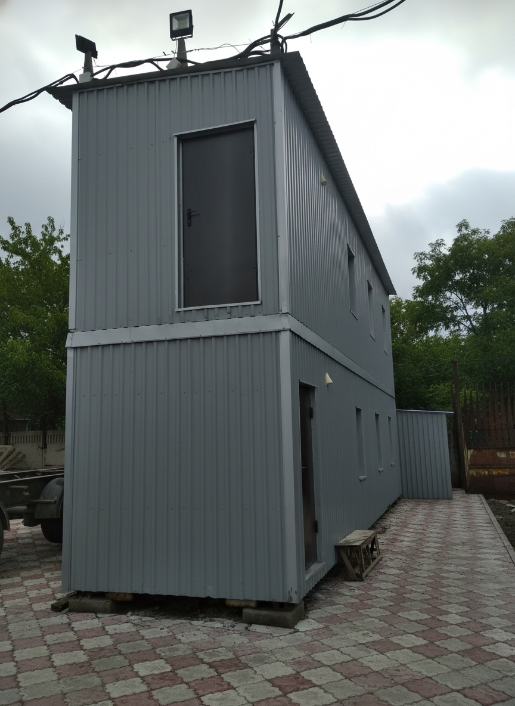
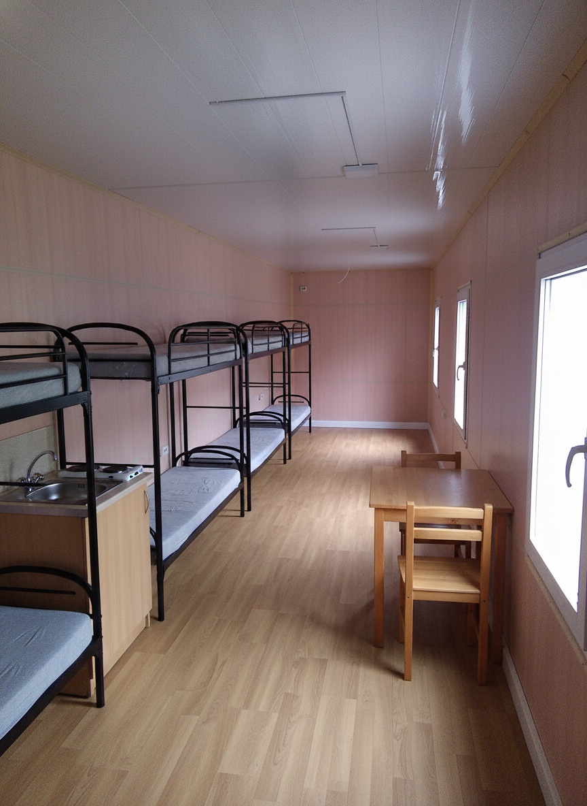
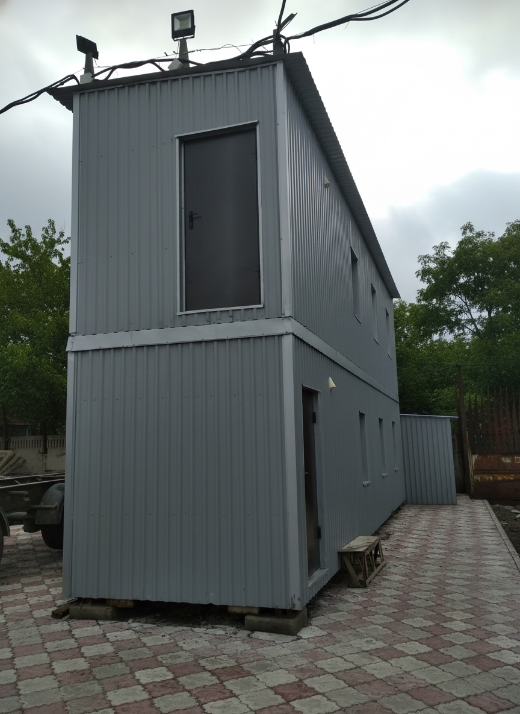
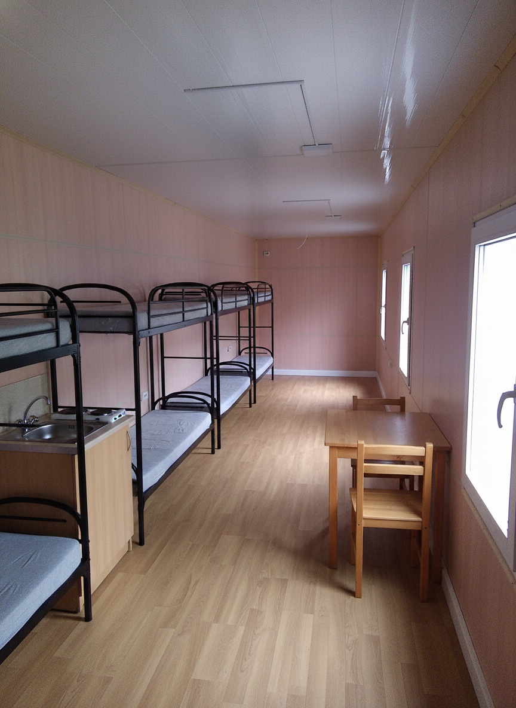

← Zurück zu Container & Modulbau
Zweigeschossiges Büro- und Aufenthaltsmodul
Kompaktes zweigeschossiges Modulgebäude für Büro- und Sozialräume. Ideal als temporäres Verwaltungsgebäude, Erweiterung eines Betriebsareals oder als flexible Lösung auf Industriegeländen.
Im Erdgeschoss können Aufenthaltsräume, Garderoben und Sanitärbereiche untergebracht werden, im Obergeschoss Büroräume oder Besprechungszimmer. Die Konstruktion erlaubt spätere Anpassungen, zusätzliche Module oder Änderungen der Raumaufteilung.
Bilder zum Projekt
 



Video zum Projekt (optional)
Falls es ein Video zu diesem Büro- und Aufenthaltsmodul gibt, können wir es hier einbinden. Ersetze dazu einfach die ID im YouTube-Link unten.